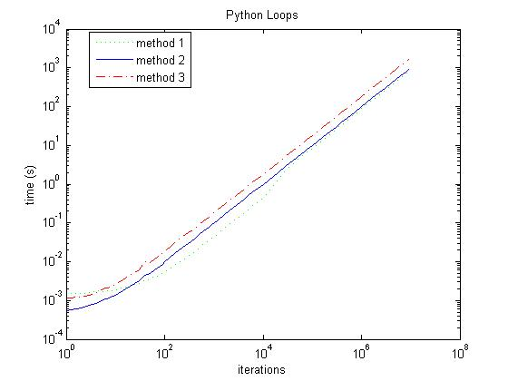

Python LoopsHere are three ways to build a for loop in Python.
#!/usr/bin/env python
def counter(_from,to,by):
while _from<=to:
yield _from
_from += by
def loop1(_from,to,by=1):
for c in range(_from,to+1,by):
pass
def loop2(_from,to,by=1):
while _from<=to:
_from += by
def loop3(_from,to,by=1):
for c in counter(_from,to,by):
pass
Using the timer module, it is easy to compare the different versions. Although I would expect that the tests which complete in just a few seconds or less are somewhat meaningless, the longer tests should hold some weight. I must say the results were quite a shock to me. | ||
|  | ||